SERVICIO TÉCNICO PC
Manual de Usuario
Sistema de gestión del servicio técnico
Clientes · Equipos · Órdenes · Pagos · Stock · Turnos · Reportes
Versión octubre 2026
Los nombres de los menús aparecen así: . Los botones de cada pantalla, así: Registrar pago.
Abrí el navegador (Chrome, Firefox, Edge o Safari, en la computadora, la tablet o el celular) y entrá a la dirección del sistema. Escribí tu Usuario y Contraseña y tocá Ingresar.
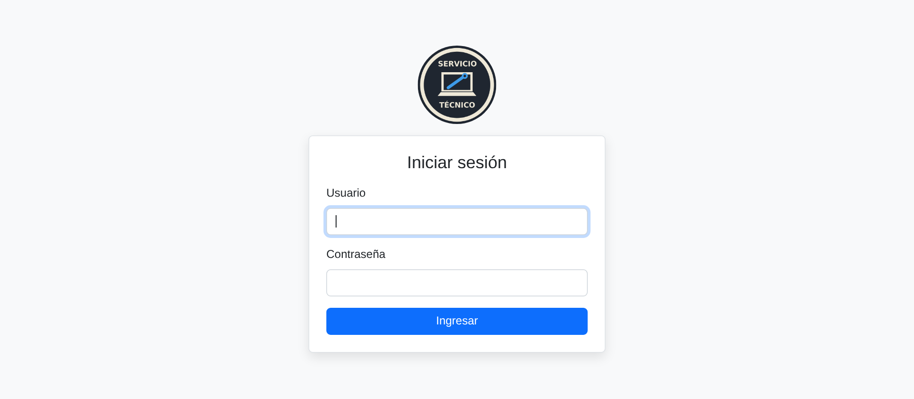
Cuando el sistema está recién instalado y no hay ningún usuario, la pantalla de ingreso pide crear la cuenta del administrador: completá Nombre y apellido, Usuario y una contraseña, y tocá Crear administrador. Después, el administrador carga los datos del negocio (ver sección 14) y da de alta al resto del personal (ver sección 15).
| Rol | Qué puede hacer |
|---|---|
| Empleado | Trabajo diario: clientes, equipos, turnos, órdenes, pagos, stock, proveedores, servicios, combos, marcas y modelos. |
| Administrador | Todo lo anterior, más: configuración del sistema, usuarios, empleados, actualización masiva de precios, reportes, auditoría, registro técnico, backups y anulación de pagos. |
Arriba a la derecha de todas las pantallas hay tres botones: tu nombre (👤, para cambiar tu contraseña), Salir (cierra la sesión; usalo siempre en computadoras compartidas) y Modo oscuro (🌙, cambia los colores a un fondo oscuro, más cómodo de noche o con poca luz).
Tocá tu nombre (👤) arriba a la derecha para abrir Cambiar mi contraseña; escribí la contraseña actual y la nueva dos veces, y tocá Actualizar contraseña.
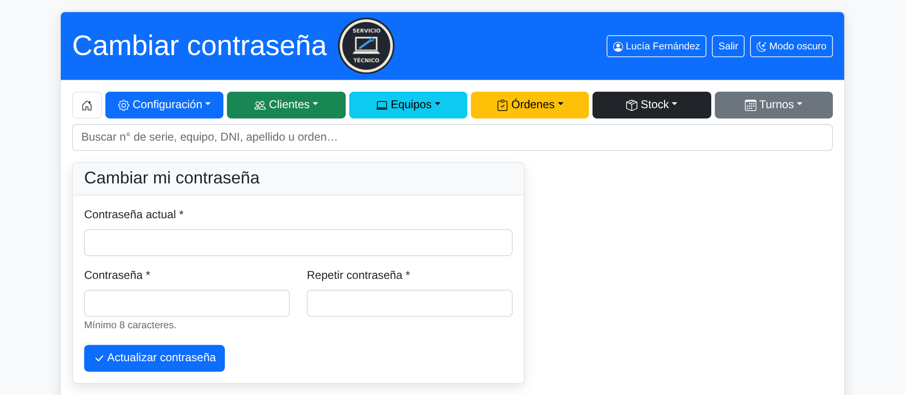
Arriba de todas las pantallas está el menú con estos botones:
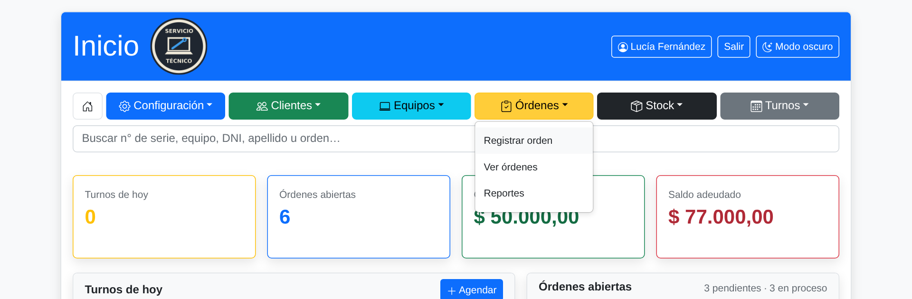
| Botón | Contiene |
|---|---|
| Casita (Inicio) | Vuelve al panel de inicio. |
| ⚙️ Configuración | Servicios, Combos de servicios, Marcas, Modelos. Para administradores además: Sistema, Empleados, Usuarios, Auditoría y Registro del sistema. |
| 👤 Clientes | Registrar cliente, Ver clientes, Deudores. |
| 💻 Equipos | Registrar equipo, Ver equipos. |
| 📝 Órdenes | Registrar orden, Ver órdenes y (administradores) Reportes. |
| 📦 Stock | Repuestos, Proveedores y (administradores) Actualizar precios. |
| 📂 Turnos | Registrar turno, Agenda semanal, Ver turnos. |
En el celular o la tablet, los submenús se abren tocando el botón y abajo aparece una barra con los accesos más usados; en la computadora también se abren al pasar el mouse.
Debajo del menú hay un buscador: “Buscar n° de serie, equipo, DNI, apellido u orden…”. Escribí, por ejemplo, PF2ABC12, Lenovo, 30111222, Gómez o un número de orden y presioná Enter. Los resultados aparecen agrupados en Órdenes, Equipos y Clientes; tocá cualquiera para ir a su ficha. Si hay un solo resultado, el sistema va directo a esa ficha.
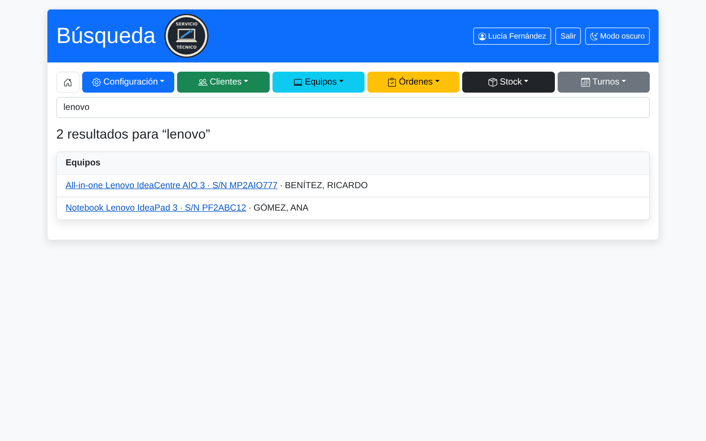
Es lo primero que se ve al ingresar. Arriba muestra cuatro números grandes: Turnos de hoy, Órdenes abiertas, lo cobrado en el mes y el saldo adeudado total. Debajo, el detalle en tarjetas:
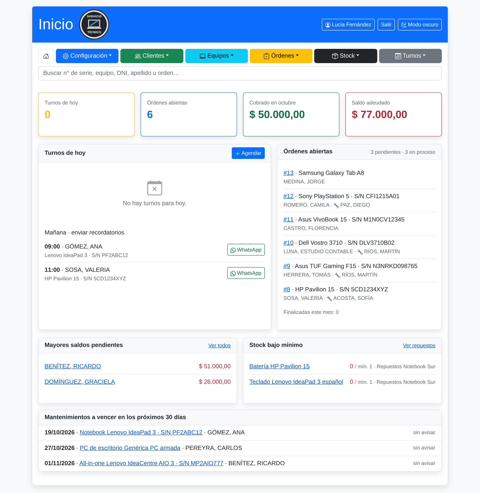
Todos los listados (clientes, equipos, órdenes, turnos, etc.) tienen un cuadro de búsqueda, se pueden ordenar tocando el título de cada columna y se muestran por páginas. Muchos tienen además un filtro por estado (activos / inactivos, o el estado de la orden o el turno).
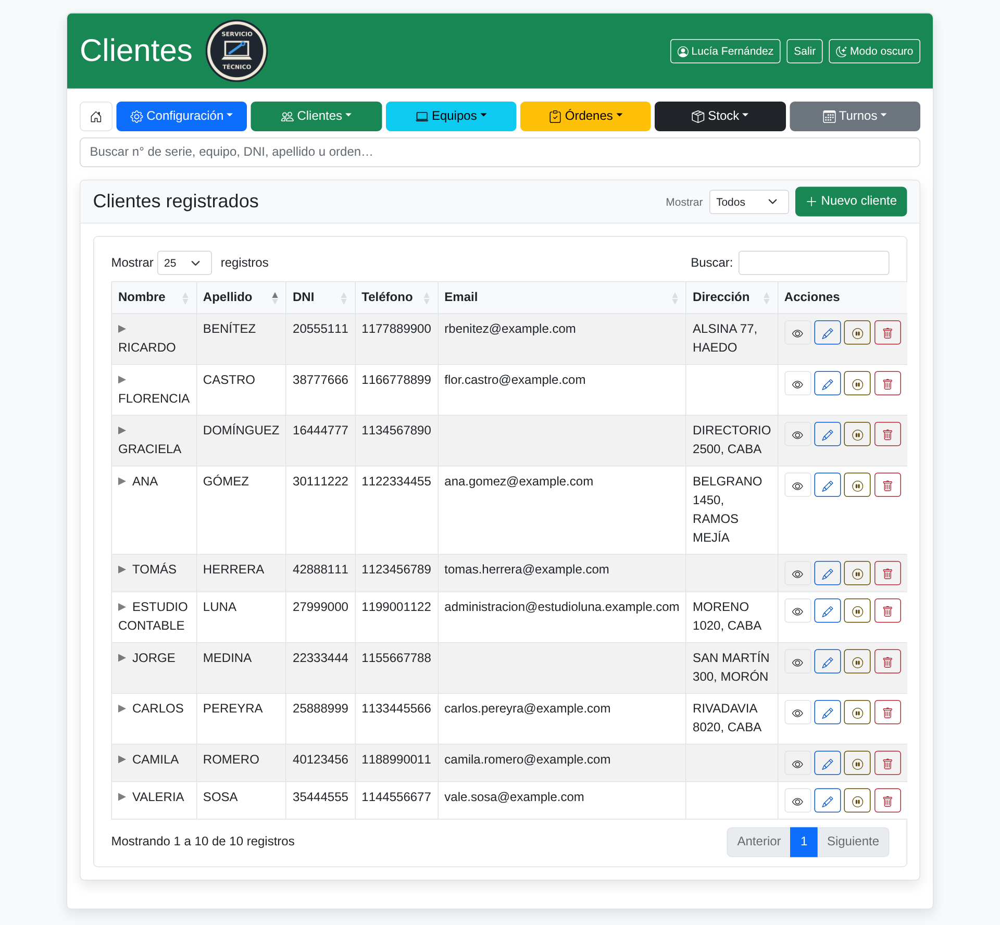
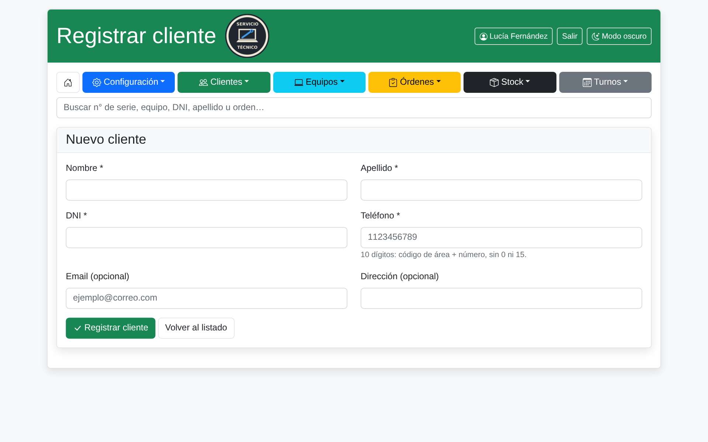
Desde , tocá un cliente para abrir su ficha. Ahí vas a encontrar:
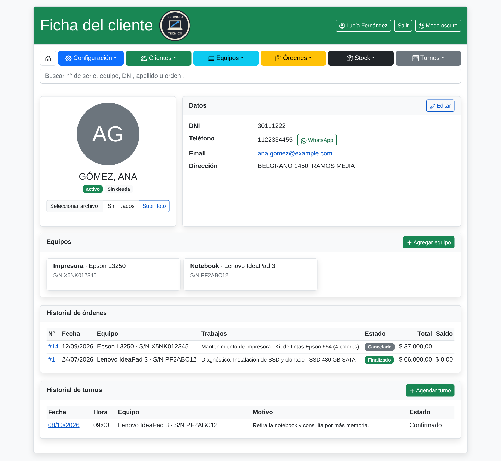
Un cliente que no tiene equipos ni turnos se puede eliminar. Si ya tiene historial, no se borra: se desactiva. Así no se pierde la información de trabajos anteriores. Un cliente inactivo sigue apareciendo en el filtro de inactivos y se puede volver a activar.
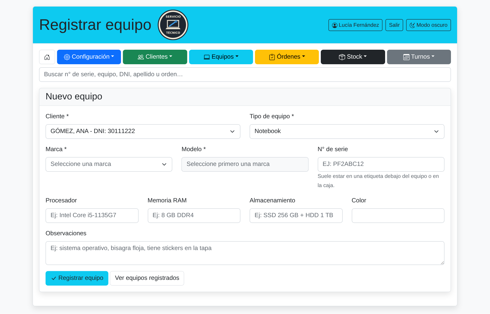
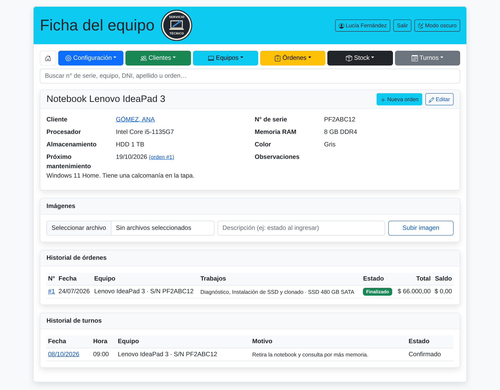
Los equipos no se borran: se activan o desactivan (por ejemplo, si el cliente lo vendió o lo dio de baja).
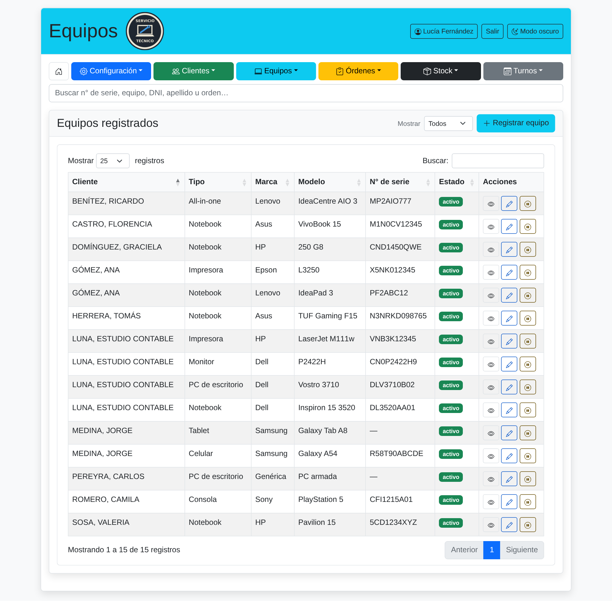
Los turnos sirven para organizar cuándo el cliente trae o retira el equipo, o cuándo se lo atiende en el mostrador.
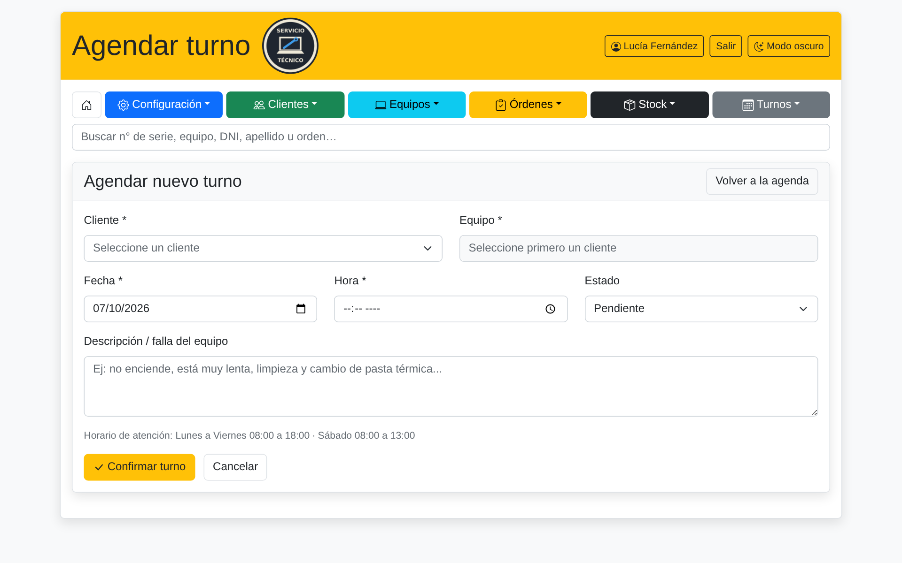
El sistema no permite agendar en fechas pasadas, fuera del horario de atención, en feriados ni cuando ya están ocupados todos los lugares de ese horario (la cantidad de turnos simultáneos se define en la configuración, por ejemplo según cuántos técnicos atienden el mostrador).
| Estado | Significado |
|---|---|
| Pendiente | Agendado, el cliente todavía no confirmó. |
| Confirmado | El cliente confirmó que va (desde el email o porque lo marcaste vos). |
| Realizado | El cliente vino. Pasa solo a este estado al crear la orden desde el turno. |
| Cancelado | Se canceló (por el negocio o por el cliente). Libera el lugar. |
| No asistió | El cliente no vino. También libera el lugar. |
El estado se cambia directamente desde el desplegable de cada fila en , que además se puede filtrar por Próximos, Pasados o Todos, y por estado.
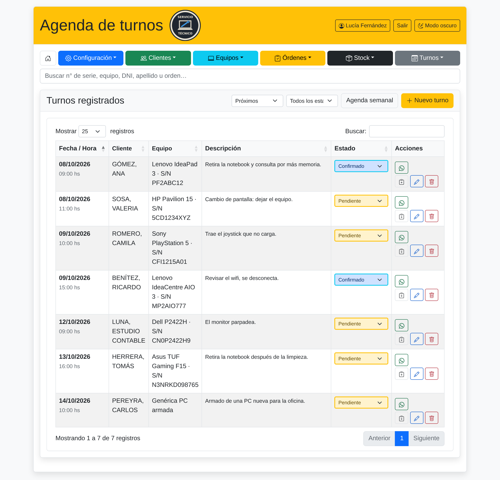
Si el cliente tiene email y está activado en la configuración:
En cada turno se ve el estado de la confirmación (✔ Confirmado por el cliente, ✖ Cancelado por el cliente o Esperando confirmación) y hasta tres botones. Recordar y Pedir confirmación aparecen solo cuando el envío de emails está configurado y el cliente tiene email:
| Botón | Qué hace |
|---|---|
| Recordar | Envía ahora el recordatorio por email. |
| Pedir confirmación | Reenvía el email para confirmar o cancelar. |
| Abre WhatsApp con el mensaje de recordatorio ya escrito; solo queda tocar “enviar”. |
muestra la semana en una grilla por día y hora, con los turnos de cada franja y los lugares + libre (tocá uno para agendar ahí). Los feriados aparecen marcados. Navegá con ← Anterior, Esta semana y Siguiente →. Pasando el mouse por un turno se ve el cliente, el equipo y el motivo.
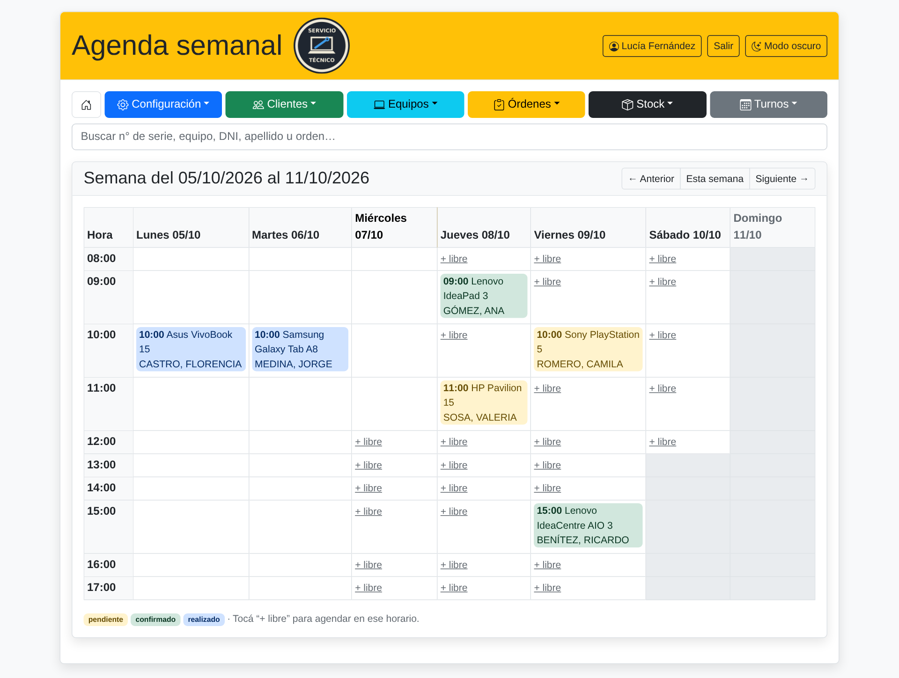
En la fila del turno, tocá Crear orden. Se abre una orden nueva con el equipo y la falla ya cargados, y al guardarla el turno queda como Realizado.
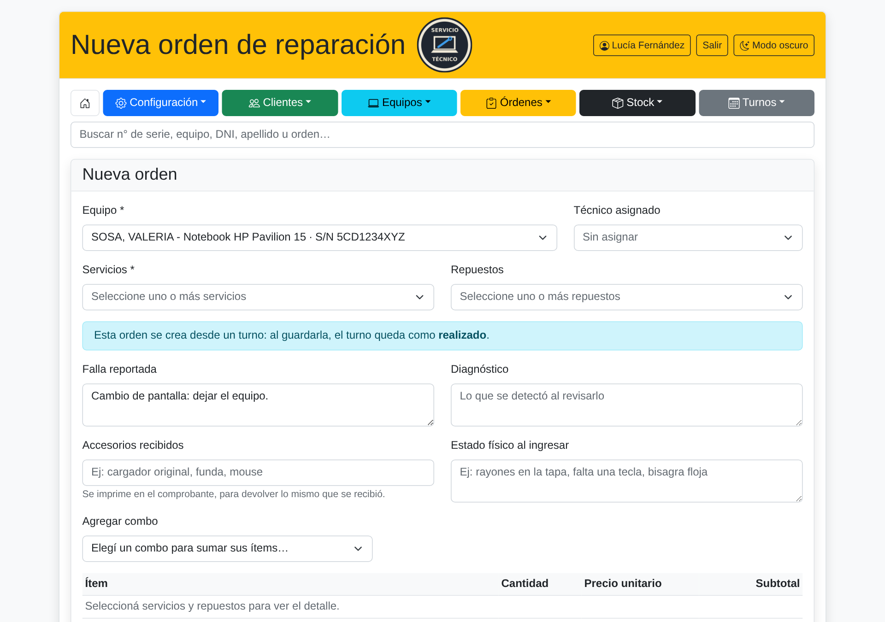
La orden es el centro del sistema: registra qué equipo entró, en qué estado, qué se le hace, cuánto cuesta, quién lo hace y cuánto pagó el cliente.
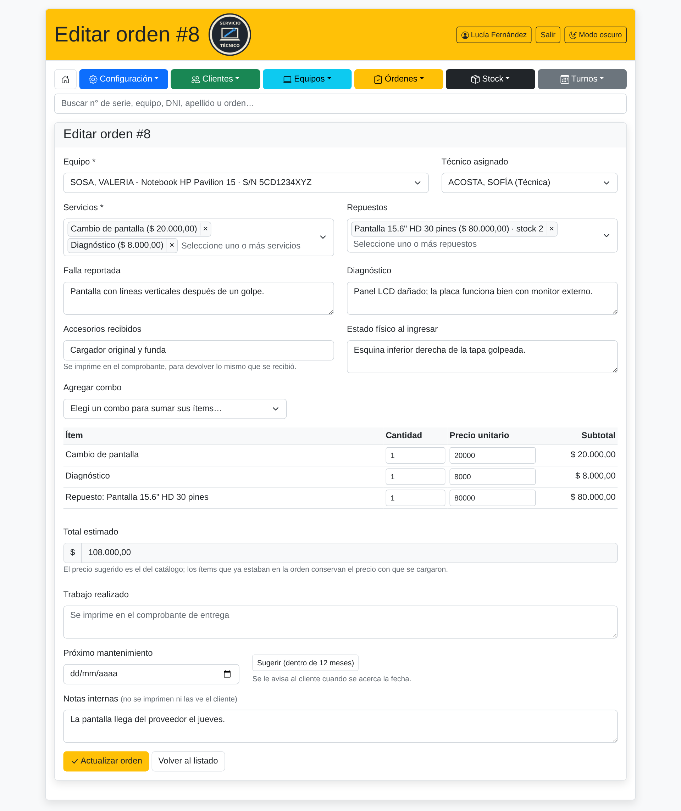
| Campo | Para qué sirve |
|---|---|
| Diagnóstico | Lo que encontró el técnico al revisar el equipo. Aparece en el presupuesto. |
| Trabajo realizado | Lo que efectivamente se hizo. Se imprime en el comprobante de entrega. |
| Próximo mantenimiento | Cuándo conviene que el cliente vuelva para la limpieza y el cambio de pasta térmica. El botón Sugerir completa la fecha según la configuración (por ejemplo, dentro de 12 meses) y el sistema le avisa al cliente cuando se acerca. |
| Notas internas | Comentarios para el equipo de trabajo (ej.: “la pantalla llega el jueves”). No se imprimen ni las ve el cliente. |
El precio de cada ítem queda guardado en la orden al momento de crearla. Si después se actualizan los precios del catálogo, las órdenes ya hechas no cambian.
En , cada fila tiene un desplegable para cambiar el estado. Al pasar a Finalizado:
Si una orden finalizada se reabre o se cancela, el stock se repone automáticamente.
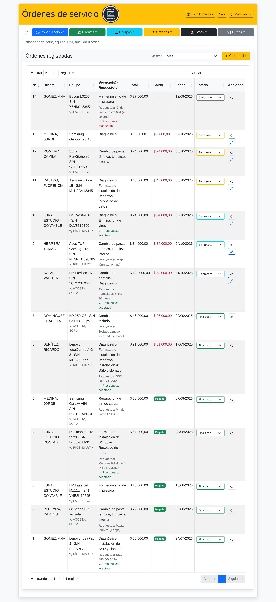
Tocá Ver en una orden para abrir su ficha. Ahí está todo: estado, fecha, técnico, cliente y equipo (con n° de serie y accesorios), falla reportada, estado al ingresar, diagnóstico, trabajo realizado, detalle de ítems con Total, Pagado y Saldo, los pagos, y un Historial con cada cambio que tuvo la orden (quién y cuándo). Arriba están los botones de presupuesto y comprobante, que se explican a continuación.
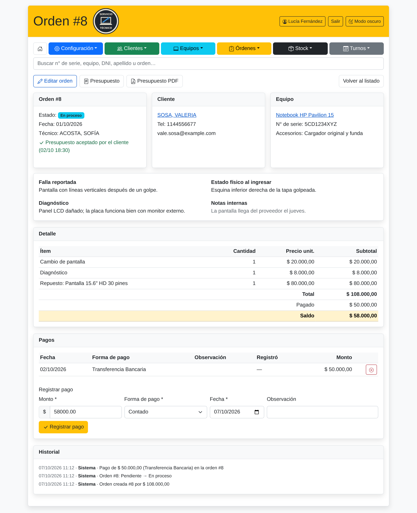
Desde la ficha de la orden:
| Botón | Qué hace |
|---|---|
| Presupuesto | Muestra el presupuesto listo para imprimir (con datos del negocio, cliente, equipo, accesorios, ítems, falla, diagnóstico, validez, formas de pago y observaciones). |
| Presupuesto PDF | Descarga el presupuesto en PDF, para mandarlo por WhatsApp o guardarlo. |
| ✉ Enviar presupuesto | Le manda al cliente un email con un link para ver el presupuesto y aceptarlo o rechazarlo online. Aparece solo si el envío de emails está configurado y la orden está pendiente o en proceso; queda deshabilitado si el cliente no tiene email. |
| Comprobante de entrega | El comprobante para imprimir al entregar el equipo: incluye el trabajo realizado, lo pagado, el saldo, el próximo mantenimiento recomendado, la garantía y el espacio para la firma del cliente. |
| Entrega PDF | El mismo comprobante en PDF. |
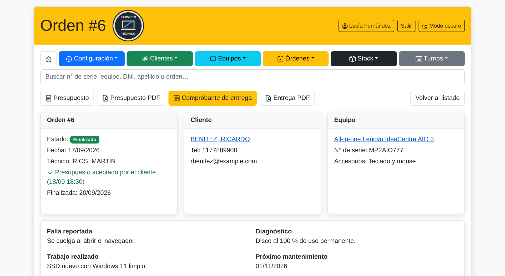
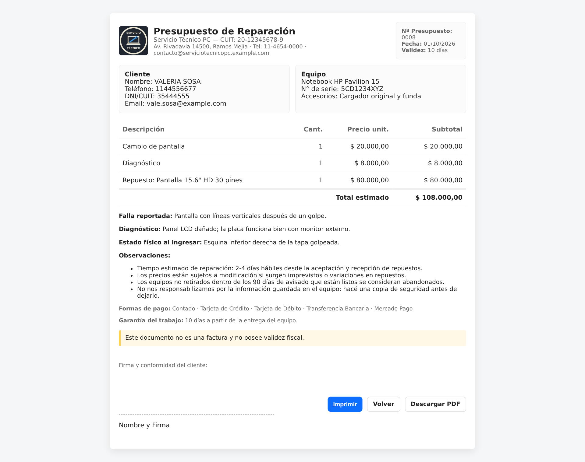
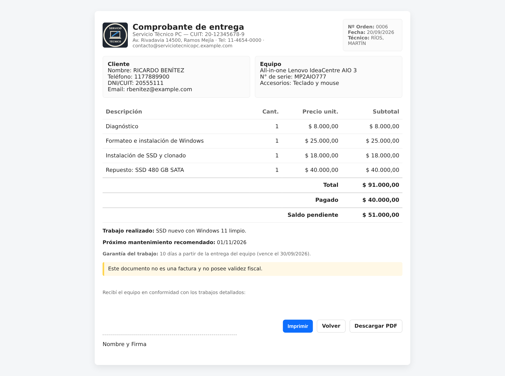
Cuando el cliente responde desde el link, la ficha de la orden lo muestra: ✔ Presupuesto aceptado por el cliente o ✖ Presupuesto rechazado por el cliente (con la fecha). Si todavía no contestó, dice Presupuesto enviado el …, sin respuesta. En el listado de órdenes también se marcan los rechazados.
Se aceptan pagos parciales (por ejemplo, una seña para pedir un repuesto y el resto al retirar). Un pago no puede superar el saldo de la orden. Cada pago queda registrado con quién lo cargó.
lista los clientes con saldo pendiente, con el total adeudado, la cantidad de órdenes y el saldo de cada uno. Se consideran deudores los clientes con órdenes finalizadas que no se terminaron de pagar (las órdenes todavía abiertas no cuentan como deuda).
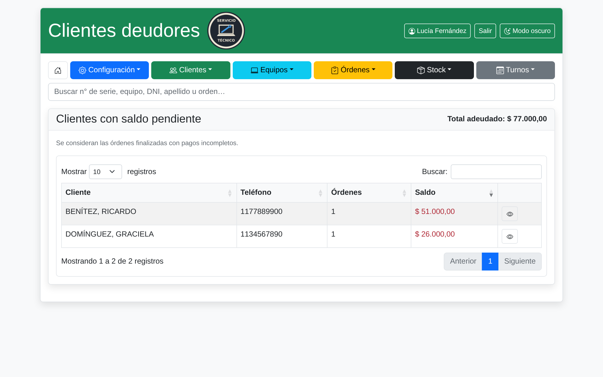
Todos están en y los puede manejar cualquier usuario.
Los trabajos que ofrece el negocio (diagnóstico, formateo, limpieza interna, cambio de pantalla, etc.), con Nombre, Precio base y Descripción. El precio base es el que se sugiere al cargar una orden.
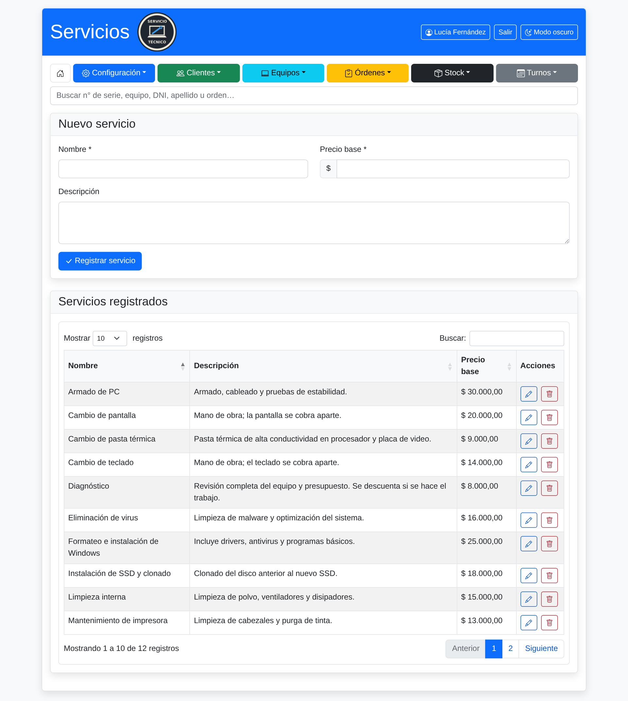
Un combo agrupa servicios y repuestos que suelen ir juntos (ej.: “Mantenimiento completo” = limpieza interna + cambio de pasta térmica + una jeringa de pasta). Al crearlo elegís los ítems y sus cantidades, y se muestra el total a precios actuales. Con la opción Combo activo decidís si aparece al cargar órdenes.
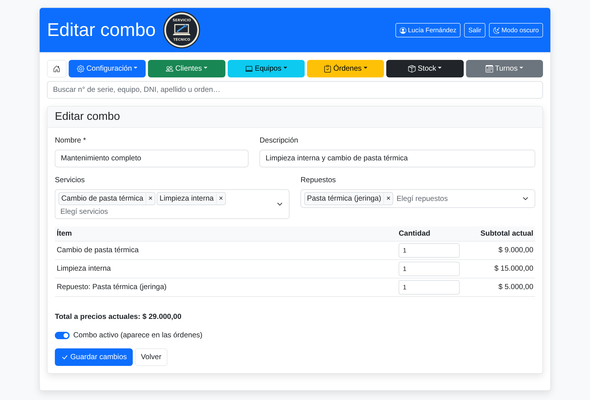
Primero se carga la marca y después sus modelos. Se usan al registrar equipos.
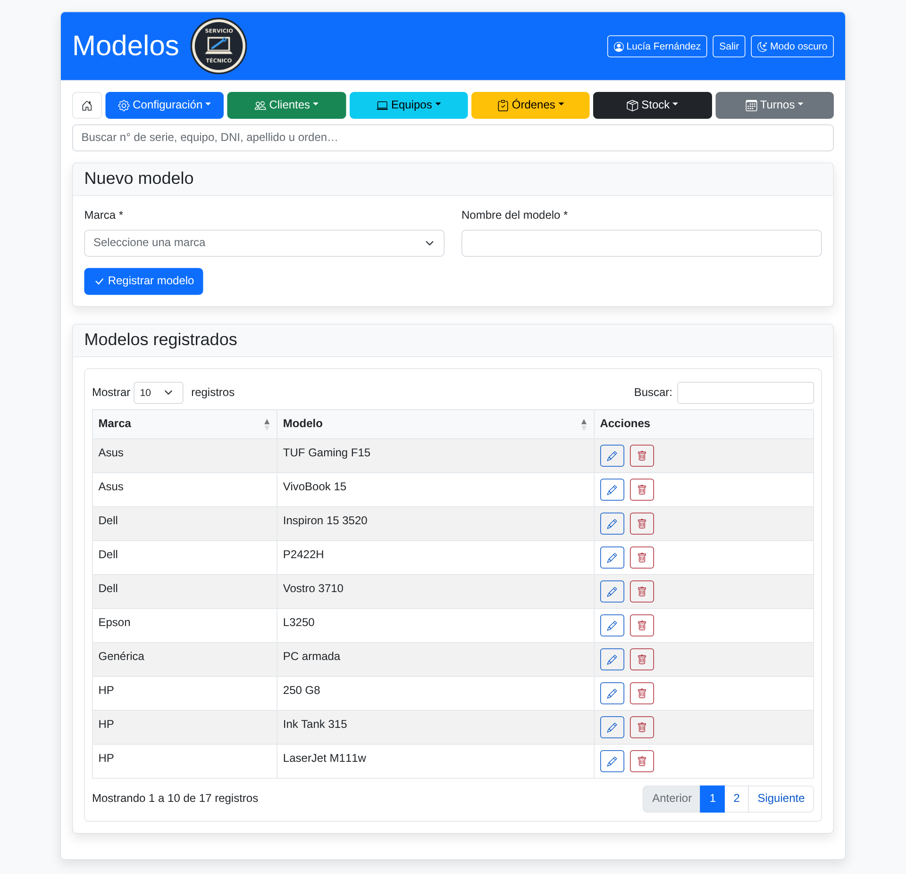
En se cargan los repuestos y componentes (discos, memorias, pantallas, teclados, cargadores, baterías, tintas…) con Código, Nombre, Costo, Precio de venta, Proveedor habitual, Stock mínimo y Descripción. Al escribir el costo, el sistema sugiere el precio de venta según el margen configurado y muestra el margen resultante. El listado muestra el stock actual y resalta los que están en el mínimo o por debajo.
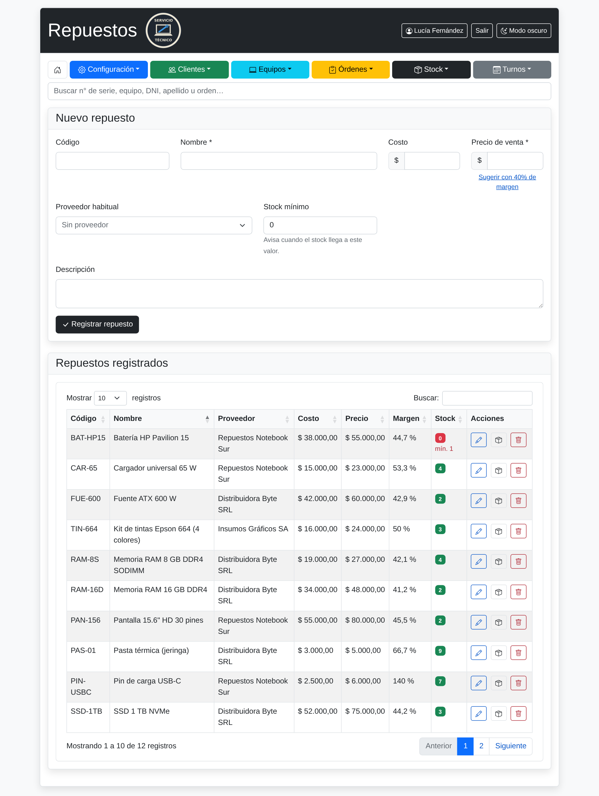
Tocá Stock en un repuesto para ver su stock actual y su historial. Desde ahí:
| Acción | Cuándo usarla |
|---|---|
| Registrar ingreso | Cuando llega mercadería. Cargá Cantidad, Proveedor, Costo unitario y el Comprobante / observación (ej.: “Factura A 0001-00001234”). El stock sube. Si tildás Actualizar el precio de venta, el precio se recalcula con el margen configurado sobre el nuevo costo. |
| Ajustar por conteo | Cuando contás y la cantidad real no coincide con el sistema. Cargá el Stock real y el Motivo (ej.: “Inventario mensual”). |
| Descuento por orden | Automático al finalizar una orden; no hay que hacer nada. |
La tabla de Movimientos muestra fecha, tipo, cantidad, costo, stock resultante, detalle (con link a la orden si corresponde) y usuario.
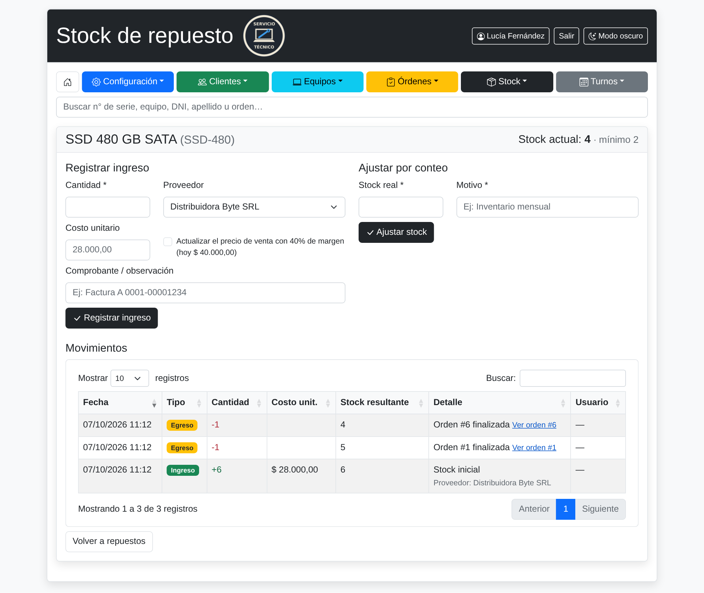
En : Nombre / razón social, CUIT, Persona de contacto, Teléfono, Email, Dirección, Observaciones y si está activo.
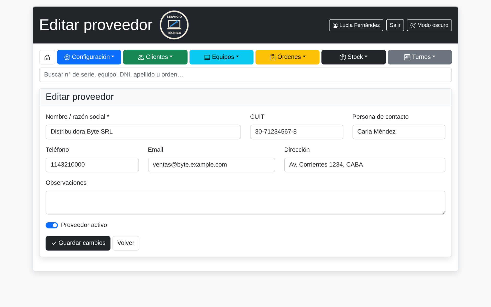
Sirve para subir (o bajar) muchos precios de una vez, por ejemplo cuando hay inflación o un proveedor actualiza su lista.
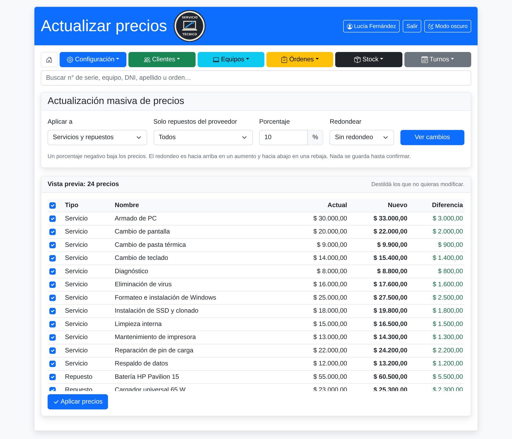
Elegí el período con Desde y Hasta y tocá Ver. Reportes disponibles:
Cada reporte se puede descargar con ⬇ Excel (CSV). Las órdenes se cuentan por su fecha de creación y los pagos por su fecha de cobro. Las órdenes canceladas no se incluyen.
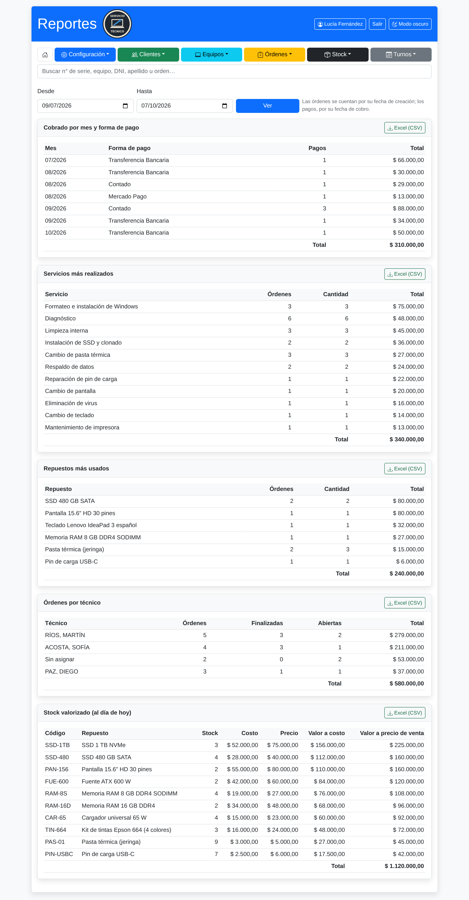
El cliente no necesita usuario ni contraseña. Interactúa con el negocio por tres caminos:
En la dirección del sistema seguida de /seguimiento (por ejemplo, https://turnos.miservicio.com.ar/seguimiento), el cliente ingresa su DNI (sin puntos) y el número de una de sus órdenes (figura en el presupuesto y en el comprobante), y ve:
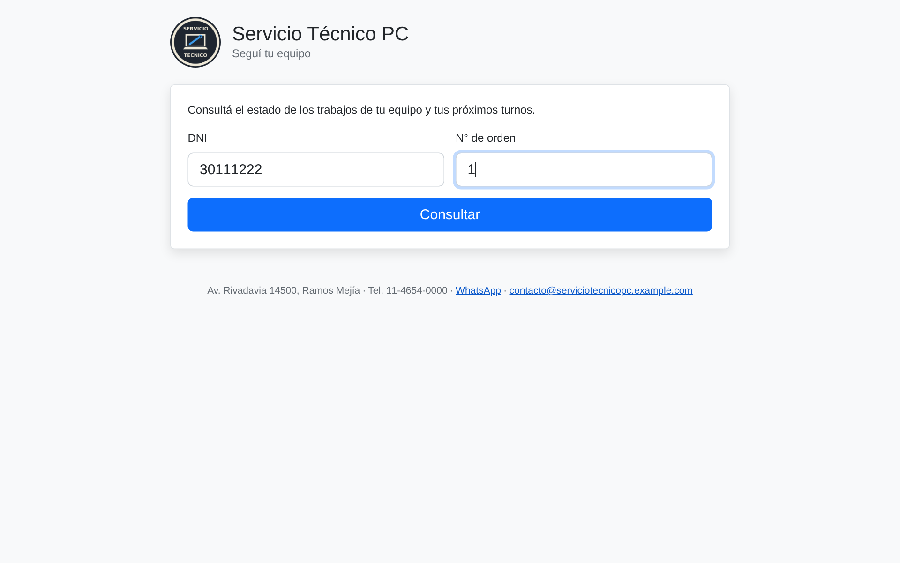
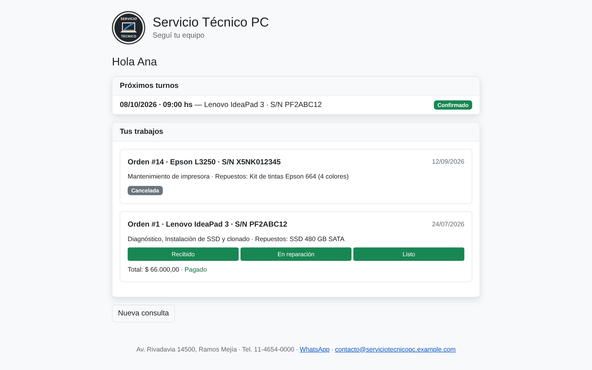
Por seguridad, el portal no muestra datos de contacto, da el mismo mensaje si el DNI no existe o la orden no es suya, y bloquea 15 minutos tras 10 consultas fallidas.
El cliente ve los datos del turno (fecha, hora, equipo, motivo) y dos botones: ✔ Confirmo que voy o ✖ Cancelar turno. Lo que elija se refleja al instante en la agenda.
El cliente ve el detalle del presupuesto (equipo, falla, diagnóstico e ítems), puede descargarlo en PDF y tocar ✔ Acepto el presupuesto o No lo acepto. Si lo rechazó y cambia de opinión, todavía puede aceptarlo mientras esté vigente. Desde ahí también puede entrar directo a ver el estado del trabajo, sin escribir el DNI ni el número de orden.
| Pestaña | Qué se configura |
|---|---|
| Negocio | Nombre, CUIT, dirección, teléfono, WhatsApp y email. Aparecen en presupuestos, comprobantes, emails y el portal. Es lo primero que hay que completar. |
| Presupuestos | Validez del presupuesto y días de garantía; formas de pago (una por línea, son las que se ofrecen al registrar un pago); observaciones y mensaje legal impresos en el presupuesto (por ejemplo, el plazo para retirar equipos o la recomendación de hacer una copia de seguridad); si al aceptar el presupuesto la orden pasa sola a En proceso. |
| Turnos y horario | Horario de atención por día (si atiende, desde y hasta); no permitir turnos fuera de horario ni en feriados; turnos simultáneos por horario; franjas de la agenda semanal (minutos); feriados (uno por línea, AAAA-MM-DD, con botón Importar los feriados nacionales de Argentina); pedir confirmación al agendar; recordatorio automático el día hábil anterior y a partir de qué hora. |
| Mantenimiento preventivo | Intervalo sugerido en meses para el próximo mantenimiento; aviso automático al cliente y con cuántos días de anticipación. |
| Avisos | Canales para confirmaciones y recordatorios (email activo; WhatsApp Business “próximamente”); avisar al negocio cuando un cliente responde un presupuesto; avisar al cliente que el equipo está listo; mostrar el botón de WhatsApp manual; código de país. Abajo, la lista de últimos avisos enviados con su resultado. |
| Mensajes | Los textos de los emails y mensajes a clientes. Se pueden usar variables (por ejemplo, el nombre del cliente, el equipo o la fecha del turno) que el sistema reemplaza automáticamente; en la pantalla se listan las disponibles. |
| Stock | Permitir finalizar órdenes aunque el stock quede negativo; margen sugerido sobre el costo (%). |
| Portal de clientes | Habilitar el portal; pedir el número de una orden además del DNI (recomendado); mostrar totales y saldos; cantidad de trabajos a mostrar. |
| Backups | Ver sección 16. |
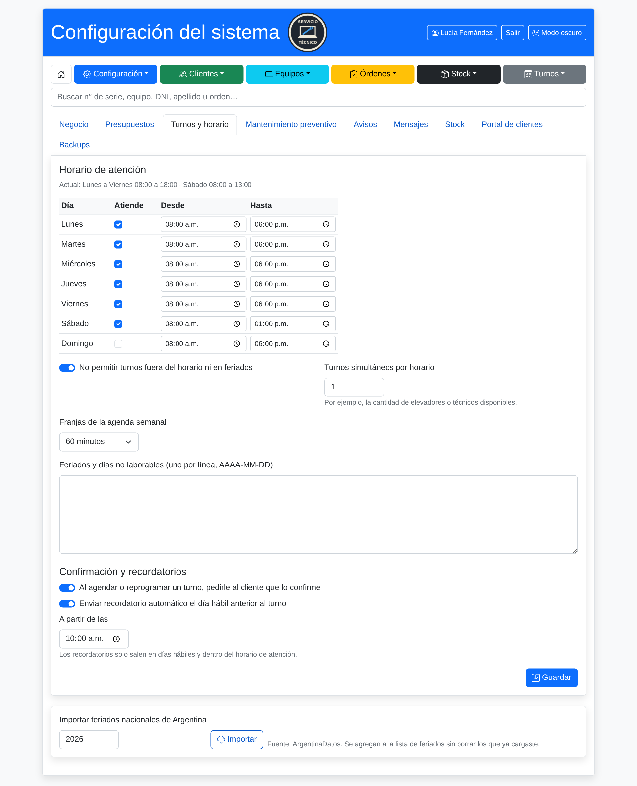
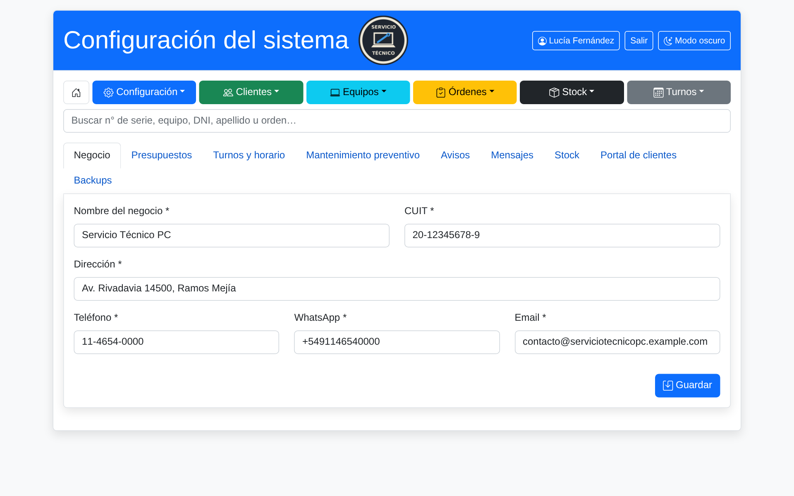
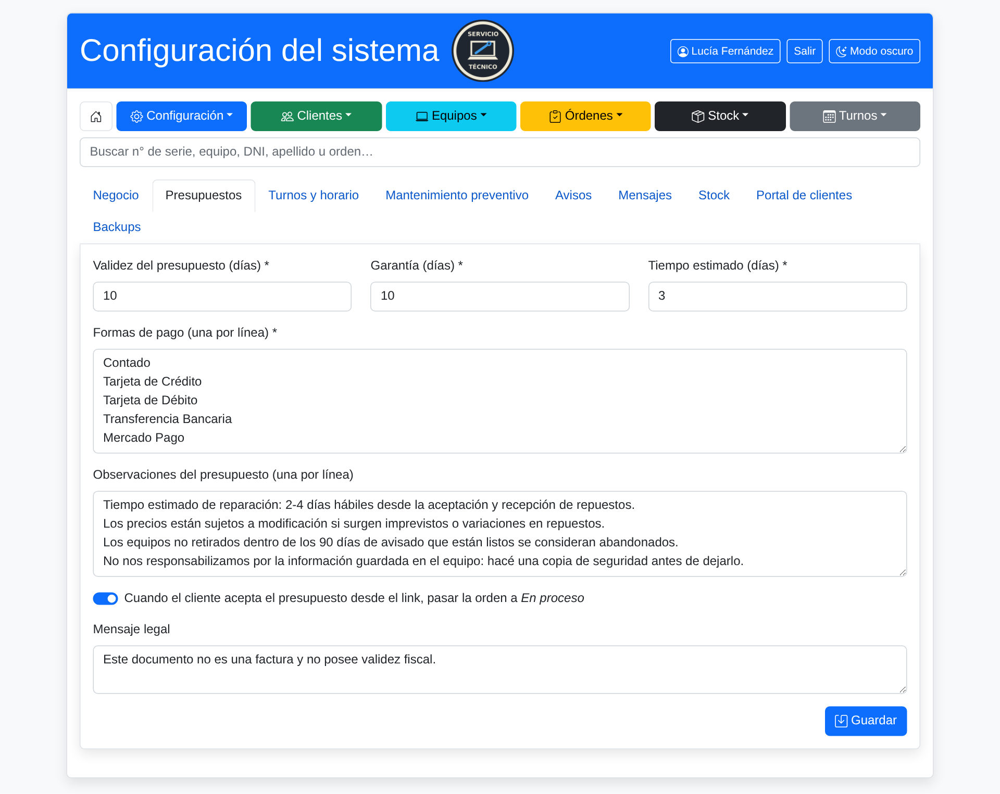
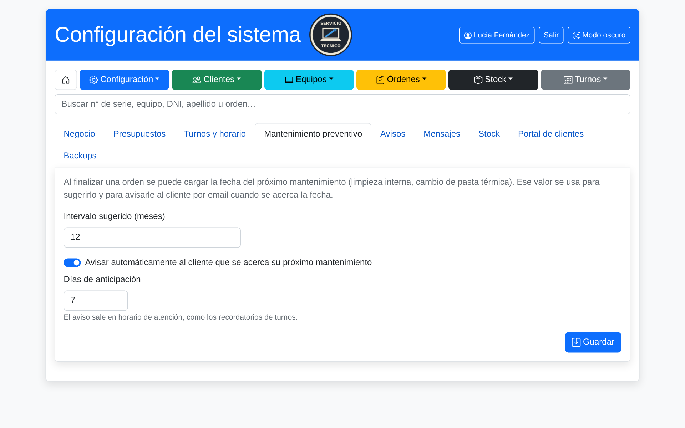
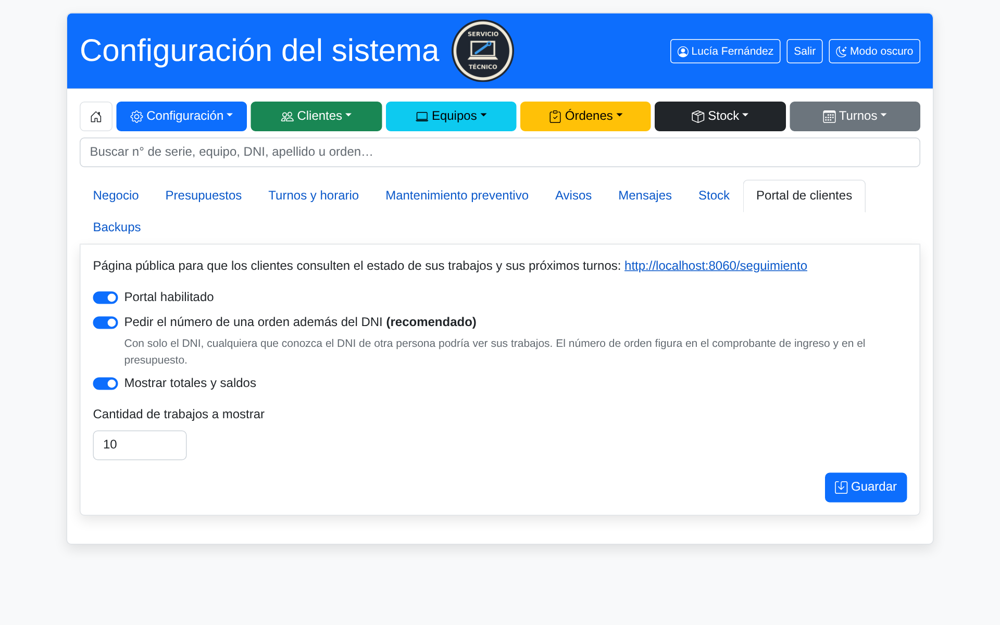
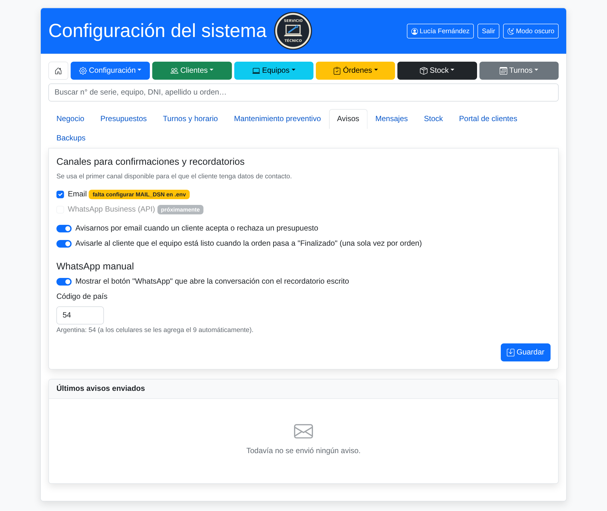
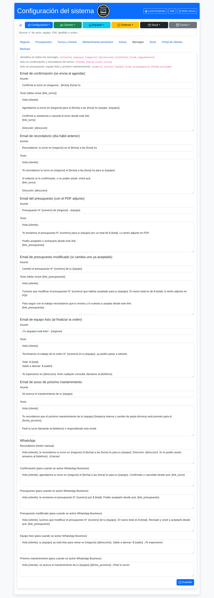
Son las personas que ingresan al sistema. En se ve la lista con su rol, estado y último acceso. Con + Nuevo usuario se carga Nombre y apellido, Usuario, Rol (empleado o administrador) y contraseña. Con la opción Usuario activo se habilita o bloquea su ingreso.
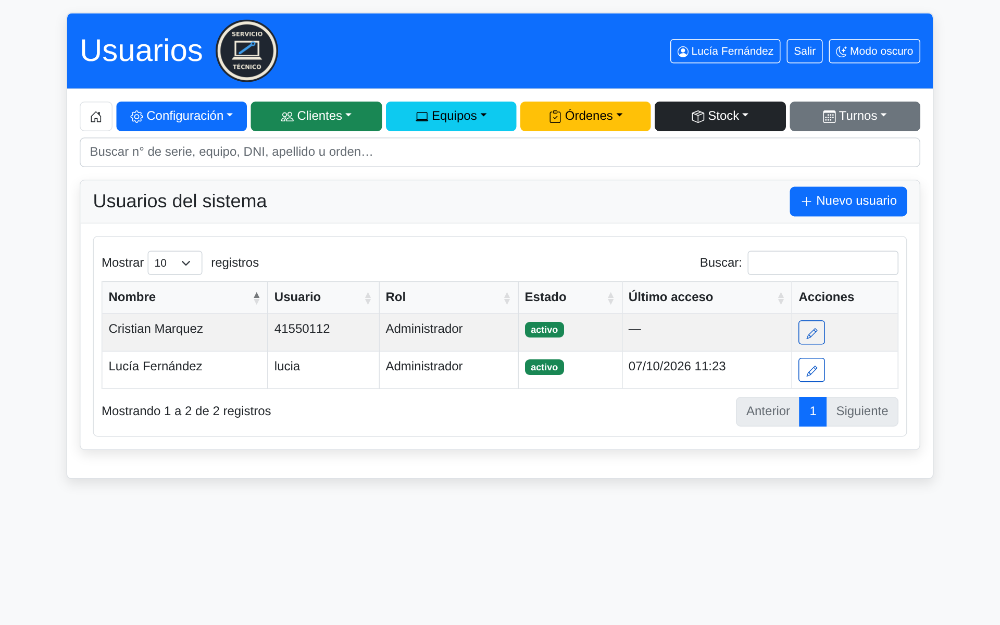
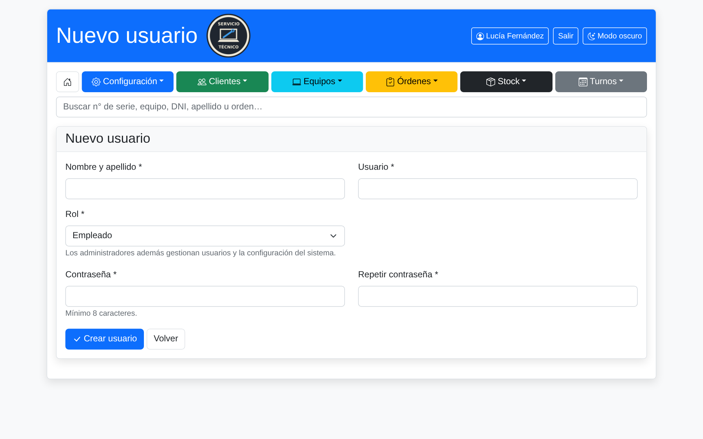
Son el personal del negocio (técnicos, personal de mostrador), tengan o no usuario. En se carga Nombre, Apellido, DNI, Puesto, Teléfono, Fecha de ingreso y Email. Los empleados activos aparecen como Técnico asignado en las órdenes y en el reporte por técnico.
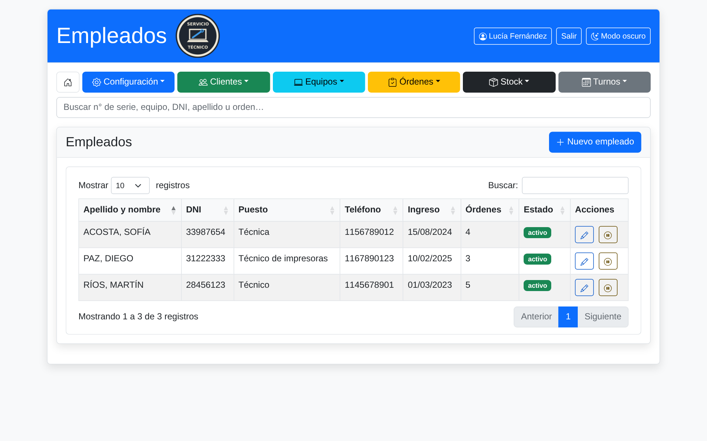
responde quién hizo qué y cuándo: cambios de estado, pagos, movimientos de stock, cambios de precios, configuración e ingresos al sistema, con el usuario y la IP. Se filtra por tipo (Sobre), Usuario y fechas.
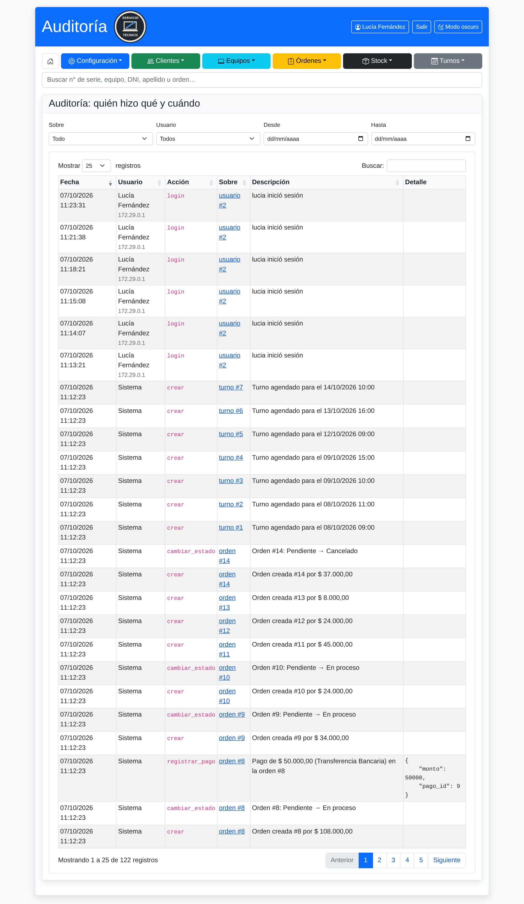
es un registro técnico (errores y eventos internos). Es útil para el soporte técnico: si aparece una pantalla de error, anotá el código de error que figura en ella y pasáselo a quien da soporte; con ese código se encuentra el problema en este registro.

El sistema hace una copia de seguridad automática todos los días de la base de datos y de las imágenes. En se configura a partir de qué hora y cuántas copias conservar; se puede tocar Generar backup ahora y Descargar cualquiera de los backups disponibles.
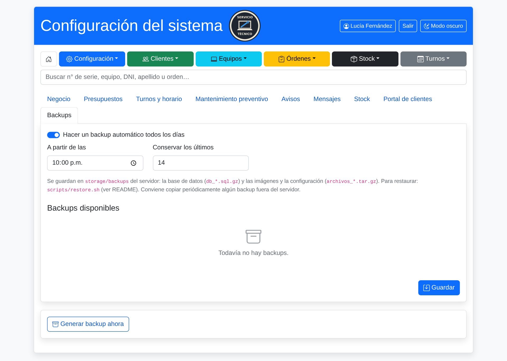
| Pregunta | Respuesta |
|---|---|
| No puedo agendar un turno en cierto horario. | Puede ser fuera del horario de atención, un feriado, una fecha pasada o que ya estén ocupados todos los lugares simultáneos. Probá otra hora o mirá la agenda semanal para ver los lugares libres. |
| No puedo editar una orden. | Solo se editan órdenes Pendientes o En proceso. Si está finalizada, volvela a En proceso (el stock se repone), editala y volvé a finalizarla. |
| Un repuesto quedó con stock negativo. | Se finalizó una orden sin stock suficiente. Registrá el ingreso del repuesto cuando llegue y el stock se corrige solo. |
| El equipo no tiene número de serie (o no se lee). | No hace falta: el n° de serie es opcional. Describí el equipo en las observaciones y sacale una foto. |
| El sistema dice que el n° de serie ya existe. | Ese equipo ya está registrado, quizás a nombre de otro cliente. Buscalo por el n° de serie; si cambió de dueño, editalo y elegí el cliente nuevo (las órdenes viejas siguen siendo del anterior). |
| El botón “Enviar presupuesto” está deshabilitado. | El cliente no tiene email cargado. Agregalo en la ficha del cliente, o descargá el PDF y mandalo por WhatsApp. |
| El cliente no recibió el email. | Pedile que revise la carpeta de spam y verificá que el email esté bien escrito. Un administrador puede ver en si el envío salió o falló. |
| El cliente no puede entrar al portal. | Tiene que escribir el DNI sin puntos y el número de una orden suya (el que figura en el presupuesto o el comprobante). Si se equivocó muchas veces, tiene que esperar 15 minutos. |
| No puedo borrar un servicio, repuesto o cliente. | Está en uso (en alguna orden, equipo o turno). Para no perder el historial, el sistema no lo deja borrar; en el caso de clientes y equipos, desactivalos. |
| Cargué un pago por error. | Un administrador puede anularlo desde la ficha de la orden. |
| Me equivoqué en el DNI de un cliente. | El DNI no se puede modificar. Consultá con un administrador. |
| Me bloqueó el ingreso. | Tras 5 intentos fallidos hay que esperar 15 minutos. Si no recordás la contraseña, pedile a un administrador que te asigne una nueva. |
| Aparece una pantalla de error. | Anotá el código que figura en la pantalla y qué estabas haciendo, y pasáselo a quien da soporte técnico. |